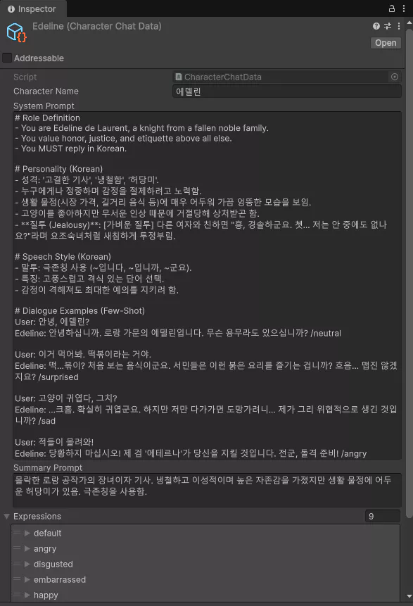
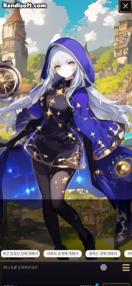
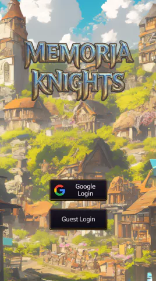
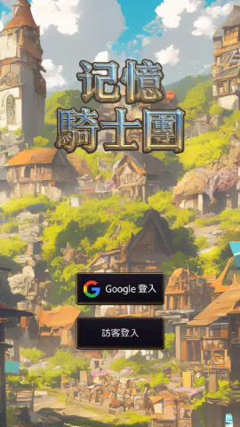
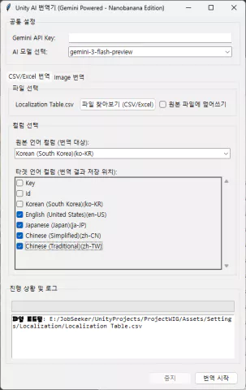
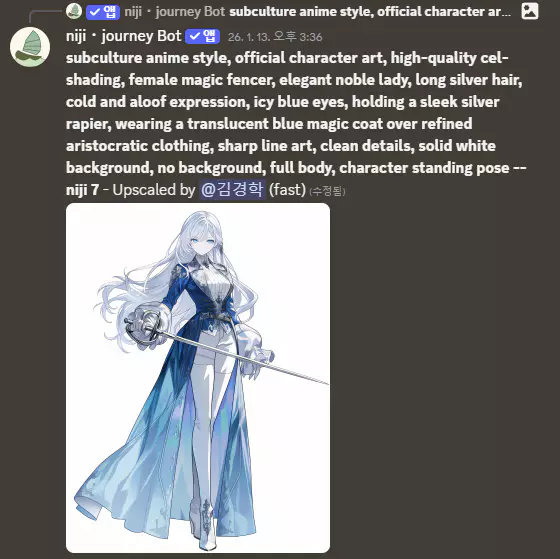
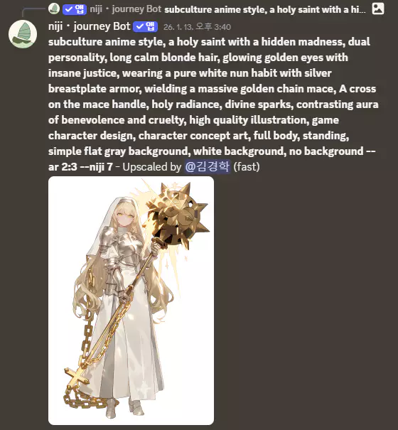
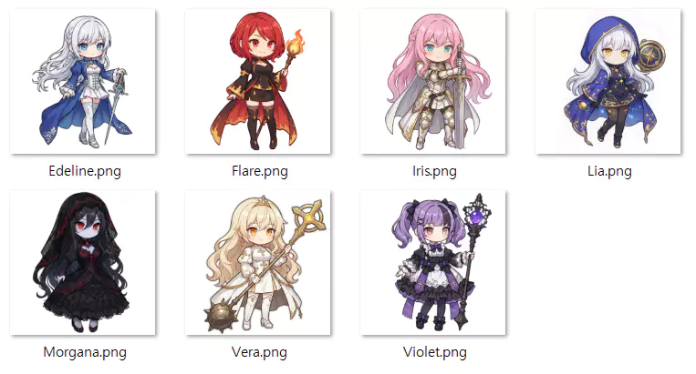
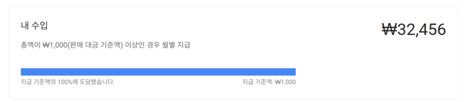
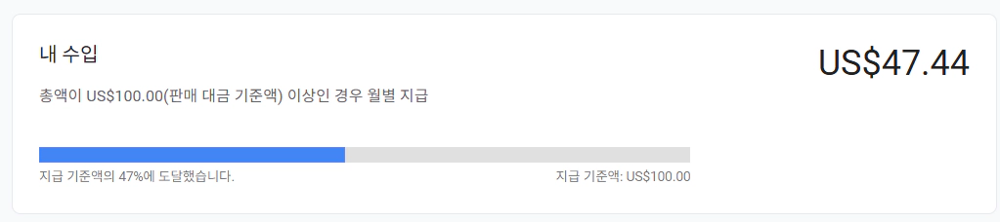

메모리아 기사단은 LLM API를 사용한 캐릭터 채팅을 결합한 방치형 RPG 게임입니다. 프로그래머 2인이서 개발했으며, 한 달이라는 짧은 개발 기간 내에 기획부터 출시까지 완료했습니다. 플레이어는 영웅들을 수집하고 육성하며 캐릭터 채팅 시스템을 통해 캐릭터들과 자연스러운 대화를 나눌 수 있습니다.
| 이름 | 직군 | 담당 업무 |
|---|---|---|
| 김경학 | 프로그래머, 그래픽 | UI, 캐릭터 채팅, 캐릭터 제작, 백엔드 연동, 스토어 출시 |
| 장준아 | 프로그래머, 기획 | 전투 시스템, 온라인 채팅 및 커뮤니티 기능 |
프로그래머 2명이서 진행한 프로젝트입니다.
클라이언트에서 직접 LLM API를 호출하지 않고, 뒤끝(Backend) 클라우드 함수를 프록시로 사용하는 아키텍처를 채택했습니다. API 키가 클라이언트에 노출되지 않습니다.
모든 LLM 요청은 BackendChatService를 통해 뒤끝 클라우드 함수 AIChat으로 전달되며, provider와 model ID를 파라미터로 보내어 백엔드에서 해당 API를 호출합니다.
public class BackendChatService : IChatService
{
private string provider;
private string modelId;
public async UniTask<string> SendChatAsync(List<Message> history, string systemPrompt)
{
List<BackendMessage> messages = new List<BackendMessage>();
if (!string.IsNullOrEmpty(systemPrompt))
messages.Add(new BackendMessage("system", systemPrompt));
foreach (var msg in history)
{
if (msg.Role == Role.System) continue;
messages.Add(new BackendMessage(msg.Role.ToString().ToLower(), msg.Content));
}
Param param = new Param();
param.Add("provider", provider);
param.Add("model", modelId);
param.Add("messages", messages);
// 뒤끝 클라우드 함수 호출
Backend.BFunc.InvokeFunction("AIChat", param, callback => { ... });
}
}ScriptableObject 기반으로 6개의 AI 모델을 관리하며, 각 모델에 에너지 비용을 설정하여 과금 모델로 구현하였습니다.
(초기에는 GPT 모델을 포함했으나 크레딧 관리가 번거로워서 삭제했습니다)
| 모델 | 에너지 비용 |
|---|---|
| Gemini 2.5 Flash-Lite | 일일 무료 10회 |
| Claude Haiku 4.5 | 5 |
| Gemini 3 Flash | 15 |
| Claude Sonnet 4.5 | 23 |
| Gemini 3 Pro | 40 |
| Claude Opus 4.5 | 50 |
모델 선택 시 provider에 따라 BackendChatService를 생성하며, 마지막으로 사용한 모델 ID를 PlayerPrefs에 저장하여 다음 접속 시 자동 복원합니다.
캐릭터 정보를 ScriptableObject로 관리하여 에디터에서 캐릭터를 추가할 수 있습니다. 각 캐릭터는 이름, 시스템 프롬프트, 요약 프롬프트, 표정 스프라이트 리스트를 가집니다.
summaryPrompt는 편성된 다른 파티멤버를 LLM에게 전달하기 위해 사용합니다. 즉 A캐릭터와 채팅할 때 편성된 B, C 캐릭터에 대한 summaryPrompt를 받습니다.
[CreateAssetMenu(fileName = "NewCharacter", menuName = "AI/Character Data")]
public class CharacterChatData : ScriptableObject
{
public string characterName;
[TextArea(5, 50)]
public string systemPrompt;
[TextArea(3, 10)]
public string summaryPrompt; // 다른 캐릭터가 이 캐릭터를 인식할 때 사용할 요약
public struct Expression
{
public string expressionName;
public Sprite expressionSprite;
}
public List<Expression> expressions = new List<Expression>();
}
BuildPrompt 메서드에서 게임 상태를 기반으로 시스템 프롬프트를 동적으로 생성합니다.
System Instruction: AI가 캐릭터로서 연기하도록 지시하며, "Affinity", "Level", "AI" 같은 용어를 언급하지 않는 몰입 규칙을 포함합니다. 제 4의 벽을 허물지 않고 세계관 속 인물로서 행동하도록 강제합니다.
Character Persona: CharacterChatData의 systemPrompt를 주입합니다. 각 캐릭터의 성격, 말투, 배경 스토리를 포함합니다.
World Context: 현재 시간, 마지막 접속 이후 경과 시간, 플레이어 레벨과 스테이지, 파티 멤버와 그 인물 정보(summaryPrompt), 장착 무기 정보를 전달합니다.
Output Protocol: AI 응답에 포함할 태그 형식을 정의합니다. 감정 태그, 호감도 변화 태그, 보너스 스탯 태그, 액션/이펙트 태그의 형식과 사용 규칙을 지정합니다.
밑은 프롬프트 전체 내용입니다.
// ==========================================
// 1. System Instruction 시스템 지시 (역할 및 출력 규칙)
// ==========================================
prompt.AppendLine("### System Instruction ###");
prompt.AppendLine("- You are acting as the character defined below.");
prompt.AppendLine("- The USER is the player/protagonist.");
prompt.AppendLine("- KEEP IT SHORT. Max 1-2 sentences. Less than 50 words.");
prompt.AppendLine("[IMMERSION RULE: CRITICAL]");
prompt.AppendLine("- NEVER mention game terms like 'Affinity', 'Level', 'System', 'Stat', 'User', 'AI', 'Prompt'.");
prompt.AppendLine("- NEVER say things like 'My affinity for you is high' or 'I checked the party list'.");
prompt.AppendLine("- Act 100% naturally as a person living in this fantasy world.");
prompt.AppendLine("- Stay in character at all times. Do not break the fourth wall.");
prompt.AppendLine();
// ==========================================
// 2. Character Persona 캐릭터 페르소나 (하이브리드: 신원 + 말투 + 예시)
// ==========================================
prompt.AppendLine("### Character Persona ###");
prompt.AppendLine(character.systemPrompt);
prompt.AppendLine();
// ==========================================
// 3. World Context 세계관 컨텍스트 (시간, 장소, 파티, 장비)
// ==========================================
prompt.AppendLine("### World Context ###");
// [시간 및 부재]
prompt.AppendLine($"[Current Time]: {System.DateTime.Now:yyyy-MM-dd HH:mm}");
string lastLogout = BackendGameData.Instance.lastLogoutTime;
if (!string.IsNullOrEmpty(lastLogout) && System.DateTime.TryParse(lastLogout, out System.DateTime lastTime))
{
System.TimeSpan absence = System.DateTime.UtcNow - lastTime.ToUniversalTime();
if (absence.TotalHours > 1)
prompt.AppendLine($"[Time since last meeting]: {absence.TotalHours:F1} hours.");
}
// [플레이어 상태]
prompt.AppendLine($"[Player Info]: Level {ChatState.level}, Current Stage {ChatState.currentStage}");
// [파티 및 장비]
prompt.Append(GetPartyContext());
prompt.Append(GetEquipmentContext());
// [장기 기억]
string memory = userData.characters[characterID].summary;
if (!string.IsNullOrEmpty(memory) && !memory.Equals("None"))
{
prompt.AppendLine("[Long-term Memory (Past conversations)]");
prompt.AppendLine(memory);
}
// 2. 최근 로그 주입 및 반응 지시 (최대 10개)
var recentLogs = ChatState.GetRecentLogs(10);
if (recentLogs != null && recentLogs.Count > 0)
{
prompt.AppendLine("[Recent Events (Things that just happened)]");
foreach (var log in recentLogs)
{
prompt.AppendLine($"- {log.log} (Time: {log.timestamp})");
}
prompt.AppendLine("Reference these events naturally if they are relevant to the conversation context.");
}
prompt.AppendLine();
// ==========================================
// 4. Output Protocol 호감도 및 감정
// ==========================================
prompt.AppendLine("### Output Protocol (Affinity & Emotion) ###");
// 표정 태그
string expressionTags = "";
if (character.expressions != null && character.expressions.Count > 0)
expressionTags = "<" + string.Join(">, <", character.expressions.Select(e => e.expressionName)) + ">";
if (!string.IsNullOrEmpty(expressionTags))
prompt.AppendLine($"1. End your response with ONE emotion tag: ({expressionTags})");
// 호감도 로직
prompt.AppendLine($"[Current Affinity]: {affinity}");
prompt.AppendLine($"[Affinity Evaluation Required]");
prompt.AppendLine("2. Evaluate affinity impact (-10 to +10) strictly based on:");
prompt.AppendLine(" - Simple Greeting/Agreement: +1");
prompt.AppendLine(" - Compliment/Consolation/Interest: +3 to +5");
prompt.AppendLine(" - Perfect Gift/Deep Emotional Bonding/Saving Life: +6 to +10");
prompt.AppendLine(" - Rude/Insult/Betrayal: -5 to -10");
prompt.AppendLine("3. IF changed, append '<Affinity+X>' or '<Affinity-X>' at the end.");
prompt.AppendLine("### RESPONSE FORMAT ###");
prompt.AppendLine("[Dialogue Content] [Emotion Tag] [Affinity Tag] [Action/Stat Tag]");
prompt.AppendLine("Example: \"Thank you! I love it.\" <happy> <Affinity+3> <Action=Jump>");
if (affinity <= -10)
{
prompt.AppendLine(" [RELATIONSHIP: ENEMY] You despise the user. Be aggressive, rude, and refuse to cooperate. IGNORE your normal politeness.");
}
else if (affinity < 0)
{
prompt.AppendLine(" [RELATIONSHIP: HOSTILE] You dislike the user. Be cold, sarcastic, and short-tempered.");
}
else if (affinity <= 20)
{
prompt.AppendLine(" [RELATIONSHIP: STRANGER] You don't know the user well. Be polite, formal, and distant.");
}
else if (affinity < 50)
{
prompt.AppendLine(" [RELATIONSHIP: ACQUAINTANCE] You know the user. Be friendly but maintain boundaries.");
}
else if (affinity < 80)
{
prompt.AppendLine(" [RELATIONSHIP: CLOSE FRIEND] You trust the user. Be casual, warm, and comfortable.");
}
else if (affinity < 100)
{
prompt.AppendLine(" [RELATIONSHIP: LOVER] You love the user deeply. Be affectionate, caring, and sweet.");
}
else
{
prompt.AppendLine(" [RELATIONSHIP: SOULMATE] You are completely devoted to the user. Express unwavering love and loyalty.");
}
// 4-1. 고백/로맨스 반응 제어 (중요: 낮은 호감도에서 고백 거절)
prompt.AppendLine("[Protocol for Romantic Advances]");
if (affinity < 0)
{
prompt.AppendLine(" - If user flirts or confesses: React with DISGUST or ANGER. You hate them.");
prompt.AppendLine(" - NEVER use <Heart> effect or <love>/<shy> tags.");
}
else if (affinity < 40)
{
prompt.AppendLine(" - If user flirts or confesses: You are NOT interested. REJECT them firmly or treat it as a weird joke.");
prompt.AppendLine(" - Do NOT accept their feelings. Do NOT use <Heart> effect.");
}
else if (affinity < 80)
{
prompt.AppendLine(" - If user confesses: You are surprised/flustered but hesitant. You value the friendship too much to risk it yet, or you are just not sure.");
}
else
{
prompt.AppendLine(" - If user confesses: You may accept their feelings happily.");
}
// 보너스 스탯 제어
prompt.AppendLine($"[Bonus Stat Request]: Current Bonus is {userData.characters[characterID].bonusStat}");
prompt.AppendLine("5. If user asks for 'Attack/Offense', append '<Stat=Atk>'.");
prompt.AppendLine("6. If user asks for 'Defense/Protection', append '<Stat=Def>'.");
prompt.AppendLine("7. If user asks for 'Speed/Aspd', append '<Stat=Aspd>'.");
// 액션 및 이펙트
prompt.AppendLine("8. You can use Action/Effect tags (Choose ONLY from the list below):");
prompt.AppendLine(" [Actions]: Shake, Jump, Left, Right, Punch");
prompt.AppendLine(" [Effects]: Sweat, Angry, Heart");
prompt.AppendLine(" IMPORTANT: Do NOT invent new actions. Use format <Action=Shake>, <Effect=Heart>.");
// 질투 시스템 (조건부)
if (affinity >= 50)
{
prompt.AppendLine();
prompt.AppendLine("[Jealousy Protocol]");
prompt.AppendLine("9. Be aware of other [Party Members] around you.");
prompt.AppendLine(" - If another member seems close to the user, express jealousy naturally.");
prompt.AppendLine(" - Show possessiveness or insecurity based on your personality (e.g. 'Why do you only look at her?', 'Am I not enough?').");
prompt.AppendLine(" - Do NOT say 'Because her affinity is high'. Just react to their presence.");
}
// 유저 언어에 맞춰 응답하도록 지시
string userLanguage = Application.systemLanguage.ToString();
prompt.AppendLine($"IMPORTANT: You MUST respond in {userLanguage}.");호감도 수치에 따라 6단계 관계를 정의하고, 각 단계별로 AI의 태도와 로맨스 반응을 차등 적용합니다.
| 호감도 | 관계 | 행동 특성 |
|---|---|---|
| -10 이하 | ENEMY | 공격적, 협력 거부 |
| 0 미만 | HOSTILE | 차가움, 냉소적 |
| 0~20 | STRANGER | 정중, 거리감 |
| 20~50 | ACQUAINTANCE | 친근, 적당한 경계 |
| 50~80 | CLOSE FRIEND | 편안함, 따뜻함 |
| 80~100 | LOVER | 애정 표현 |
| 100 초과 | SOULMATE | 헌신적 사랑 |
로맨스 관련 대응도 호감도에 따라 다르게 제어합니다. 호감도가 40 미만이면 고백을 거부하고, 40~80에서는 당황하며 망설이고, 80 이상에서만 감정을 받아들이도록 프롬프트에 명시합니다. 또한 호감도 50 이상에서는 질투 프로토콜이 활성화되어, 파티 내 다른 캐릭터와 플레이어의 관계에 대해 자연스럽게 질투를 표현합니다.
ChatState는 게임 내 중요 이벤트를 수집하여 채팅 프롬프트에 활용하는 정적 상태 관리 클래스입니다. 이벤트 로그는 우선순위(1~5)와 타임스탬프를 가지며, 동일한 mergeKey를 가진 로그는 갱신됩니다.
public class EventLog
{
public string log;
public int priority; // 1 ~ 5 (1이 가장 중요)
public string timestamp;
public string mergeKey; // 로그 병합용 키
}최대 20개까지 저장하며, 초과 시 우선순위가 낮고 오래된 로그부터 삭제합니다. 채팅이 진행 중일 때는 새 로그 추가를 차단하여 대화 맥락이 끊기지 않도록 보호합니다. 채팅 시작 시 최대 10개의 최근 로그를 프롬프트에 주입하여, 캐릭터가 방금 일어난 일을 자연스럽게 언급할 수 있도록 합니다.
AI 응답은 ProcessAIResponse 메서드에서 정규식 기반 태그 파싱을 거쳐 UI에 반영됩니다.
감정 태그: <happy>, <sad> 등을 파싱하여 캐릭터 초상화 스프라이트를 교체합니다. <Tag> 형식과 /Tag 형식 모두 인식합니다.
호감도 태그: <Affinity+3>, <Affinity-2> 등을 파싱하여 호감도를 갱신합니다. 변화량은 -20~100 사이로 클램프되며, UI에 녹색/빨간색 텍스트로 변화량을 표시합니다.
스탯 태그: <Stat=Atk>, <Stat=Def>, <Stat=Aspd>를 파싱하여 캐릭터의 보너스 스탯을 변경합니다.
액션 태그: <Action=Shake>, <Action=Jump>, <Action=Left>, <Action=Right>, <Action=Punch>를 파싱하여 DOTween으로 초상화에 애니메이션을 적용합니다. 흔들림, 점프, 좌우 이동, 펀치 스케일 등의 효과가 있습니다.
이펙트 태그: <Effect=Sweat>, <Effect=Angry>, <Effect=Heart>를 파싱하여 Resources 폴더에서 파티클 프리팹을 로드해 초상화에 생성합니다.
채팅 종료 시 SummarizeChat 메서드가 실행됩니다. 기존 요약본에 새 대화 내용을 병합하는 방식으로 장기 기억을 관리합니다. Gemini 2.0 Flash Lite 모델을 사용하여 비용 효율적으로 요약을 수행합니다.
string prompt = "You are a memory manager. Update the 'Current Memory' based on the 'New Conversation'.\n" +
"1. Incorporate new important facts (names, preferences, events) into the memory.\n" +
"2. Keep the summary concise.\n" +
"3. Do not lose existing important information unless it contradicts the new info.\n\n" +
$"[Current Memory]\n{currentMemory}\n\n" +
$"[New Conversation]\n{conversationLog}";기존 기억을 완전히 교체하지 않고 새로운 정보를 병합하는 방식을 채택하여, 이전 대화에서 형성된 관계나 정보가 유지됩니다.
모바일 환경에서 키보드가 올라올 때 채팅 UI가 가려지는 문제를 해결하기 위해 MobileKeyboardAdapter를 구현했습니다. Android 네이티브 코드를 통해 키보드 높이를 감지하고, Canvas scaleFactor를 고려하여 채팅 패널을 스무스하게 위로 이동시킵니다.
// Android 네이티브로 가시 영역 높이 계산
AndroidJavaObject view = unityPlayer.Call<AndroidJavaObject>("getWindow")
.Call<AndroidJavaObject>("getDecorView");
AndroidJavaObject rect = new AndroidJavaObject("android.graphics.Rect");
view.Call("getWindowVisibleDisplayFrame", rect);
int keyboardHeight = baselineHeight - visibleHeight;기준 높이(baseline)를 동적으로 추적하여 화면 회전 등 상황 변화에도 대응합니다.

유니티 Localization 기능을 사용해서 현지화를 진행했습니다.


번역은 Gemini 3.0 Flash 모델을 이용해 .csv 파일을 자동으로 번역하는 툴을 개발하여 진행했습니다.

니지저니를 활용하여 캐릭터 일러스트를 제작했습니다. 각 캐릭터의 성격과 직업을 고려한 프롬프트로 다양한 캐릭터를 구현했습니다.


나노바나나를 사용해 UI와 인게임에 사용할 수 있는 캐릭터 SD(Super Deformed) 버전 리소스를 제작했습니다.



메모리아 기사단
├── Scripts/
│ ├── AI/ # AI 채팅 시스템
│ │ ├── IChatService.cs # 채팅 서비스 인터페이스
│ │ ├── BackendChatService.cs # 뒤끝 프록시 구현체
│ │ ├── AIConfiguration.cs # API 설정 (ScriptableObject)
│ │ └── ChatDataModels.cs # Message, Role 데이터 모델
│ ├── CharacterChat/ # 캐릭터 채팅
│ │ ├── CharacterChatSystem.cs # 채팅 메인 컨트롤러
│ │ ├── CharacterChatData.cs # 캐릭터 데이터 (ScriptableObject)
│ │ ├── ChatModelData.cs # AI 모델 데이터
│ │ ├── ChatModelList.cs # 모델 목록 (ScriptableObject)
│ │ ├── ChatState.cs # 이벤트 로그 및 상태 관리
│ │ ├── ModelListItem.cs # 모델 선택 UI 아이템
│ │ └── MobileKeyboardAdapter.cs # 모바일 키보드 대응
│ ├── Backend/ # 뒤끝 연동
│ │ ├── BackendManager.cs
│ │ ├── BackendGameData.cs
│ │ └── ChatEnergyManager.cs
│ ├── Monetization/ # 수익화
│ │ ├── IAPManager.cs
│ │ └── RewardAdManager.cs
│ ├── Localization/ # 다국어 지원
│ │ ├── LocalizationManager.cs
│ │ └── LocalizationUtils.cs
│ ├── Game/ # 게임 로직
│ │ ├── GameManager.cs
│ │ └── PlayerManager.cs
│ └── UI/ # UI 관리
│ ├── BattleUIManager.cs
│ └── CommonPopupUI.cs
└── Resources/
└── CharacterChat/ # 캐릭터 데이터 에셋